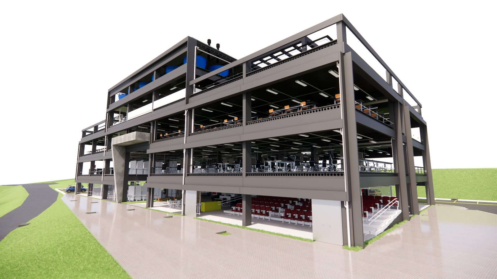

Engenharia · BIM · Dados
Da modelagem à coordenação de projetos, do levantamento de quantitativos ao orçamento BIM 5D e à automação — transformamos seus projetos em informação executiva. Mais previsibilidade, menos retrabalho e decisões baseadas em dados, para construtoras, incorporadoras e escritórios de projeto.

A dor do cliente
Informações fragmentadas, quantitativos manuais e orçamentos que não acompanham as revisões. O BIM aplicado ao custo reduz essa distância — menos improviso em obra, mais previsibilidade antes da execução.
Conflitos entre arquitetura, estrutura, hidráulica e elétrica detectados tarde demais.
Quantitativos manuais que não batem com a realidade da obra e geram estouros.
Decisões rápidas tomadas sobre dados desatualizados e desconectados entre si.
Nossas soluções
Da modelagem ao custo, da automação ao desenvolvimento de soluções sob medida para o seu processo.
Modelagem por disciplina, coordenação, compatibilização e quantitativos. Mais que 3D: inteligência executiva para decisões precisas.
Rotinas e scripts que aceleram tarefas repetitivas: extração de quantitativos, padronização e conferência de dados.
Ferramentas e automações sob medida para resolver dores reais da construção civil — tecnologia (inclusive IA) a favor do seu processo.
Segmentos que atendemos
Clique no seu tipo de obra e veja as soluções que prestamos para ele.
Para prédios e condomínios, atuamos com:
Para lojas, escritórios e empreendimentos comerciais:
Para galpões e plantas industriais:
Para obras de saúde, com alta densidade de instalações:
Para empresas que executam obras de licitação:
Para obras de maior porte:
Modelamos em BIM os projetos atualizados para fundamentar o aditivo de obra antes da execução — sua empresa pleiteia o reequilíbrio sem desembolsar capital próprio no meio da obra.
Valor percebido
A partir do modelo, o orçamento ganha velocidade e precisão.
Comparativo ilustrativo, baseado em ganhos típicos do fluxo BIM 5D frente ao levantamento manual.
Método orientado a entregáveis
Cada etapa gera entregáveis verificáveis, garantindo que a informação chegue a quem decide custo, prazo, compras e execução.
Leitura dos projetos, escopo, usos do modelo e prioridades da obra.
Construção ou adequação do modelo BIM por disciplina, com parâmetros úteis.
Análise de interferências, relatórios e alinhamento com as equipes.
Quantitativos e custos rastreáveis, prontos para orçamento executivo.
Galeria técnica
Modelos BIM para visualizar, documentar, medir e coordenar — estrutura, instalações e arquitetura.


Quem somos
A UCHOA BIM & CUSTOS nasceu da visão de Gustavo, engenheiro civil que buscou na tecnologia a chave para transformar a construção civil. Combinamos engenharia, orçamento, planejamento, BIM e automação.
Não somos apenas consultores: desenvolvemos soluções que transformam o modelo em uma infraestrutura de dados para reduzir risco, melhorar previsibilidade e aumentar produtividade.
Quantidades conectadas ao orçamento e organizadas para leitura executiva.
Elementos, parâmetros e critérios que facilitam conferência, revisão e auditoria.
Pronto para levar seus projetos ao próximo nível? Nossos especialistas estão prontos para te ajudar a inovar e alcançar resultados extraordinários.
Fale com um EspecialistaContato
Fale agora pelo WhatsApp ou preencha o formulário — retornamos o mais breve possível.